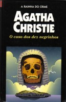

O Caso dos Dez Negrinhos
Ten Little Niggers
Dez pessoas recebem um estranho convite para passar um fim de semana na remota Ilha do Negro. Na primeira noite, após o jantar, elas ouvem uma voz, aguda e desafiadora, acusando cada uma delas por crimes cometidos no passado. Todas entram em pânico e mortes inexplicáveis se sucedem. Como na canção infantil dos Dez negrinhos, cada um dos convidados é eliminado e, a cada execução, também desaparece um dos negrinhos de porcelana que enfeitam a mesa de jantar. Mas quem seria o juiz de tal sentença? O Caso dos Dez Negrinhos é uma das obras-primas de Agatha Christie e foi adaptado para o cinema pelo diretor René Clair, em 1945, com o título O vingador invisível.
Arthur Nogueira: Por motivos diferentes, dez pessoas vão parar na ilha do negro, Anthony Marston, Emily Brent, Ethel Rogers e seu marido, Philip Lombard, Henry Blore, Vera Claythorne, o general Macarthur, Lawrence Wargrave e o dr. Armstrong. Eles nunca haviam se encontrado antes, o que possibilitou uma boa convivência, será mesmo? Era boa até irem morrendo de acordo com uma perversa historieta infantil, diante disso Agatha Christie mais do que nunca desemrola o mistério fazendo de o caso dos dez negrinhos o melhor livro de sua carreira.
Deborah Findeiss: O Caso dos Dez Negrinhos conta a história de dez pessoas que ficam presas em uma ilha. Ninguém vem resgatá-los, então começam a se desesperar. Se assustam mais ainda quando começam a morrer um por um, de acordo com um quadro localizado acima da lareira da sala, que conta um poema de como dez negrinhos morreram. Os perdidos devem desvendar quem é o assassino, alguém entre as dez pessoas, antes que chegue a hora da morte. O livro promete muito suspense e angústia até acharem uma garrafa com uma carta do assassino contando tudo à polícia.